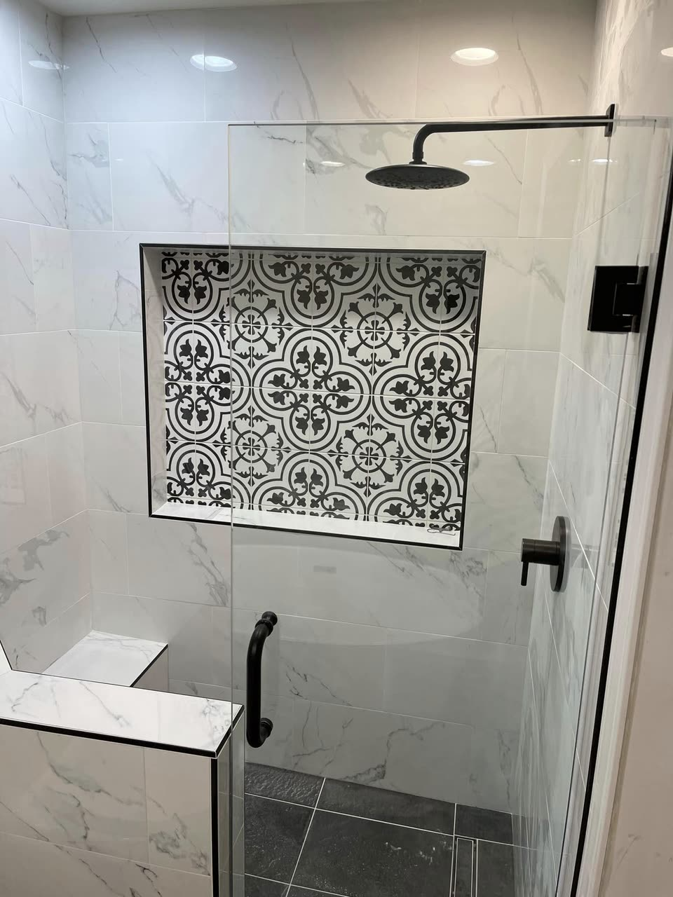
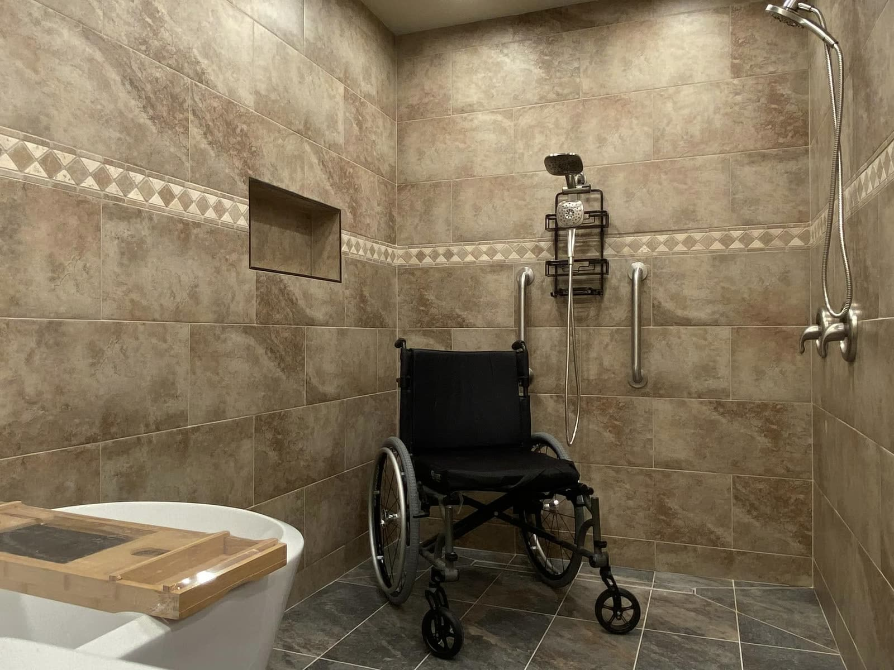
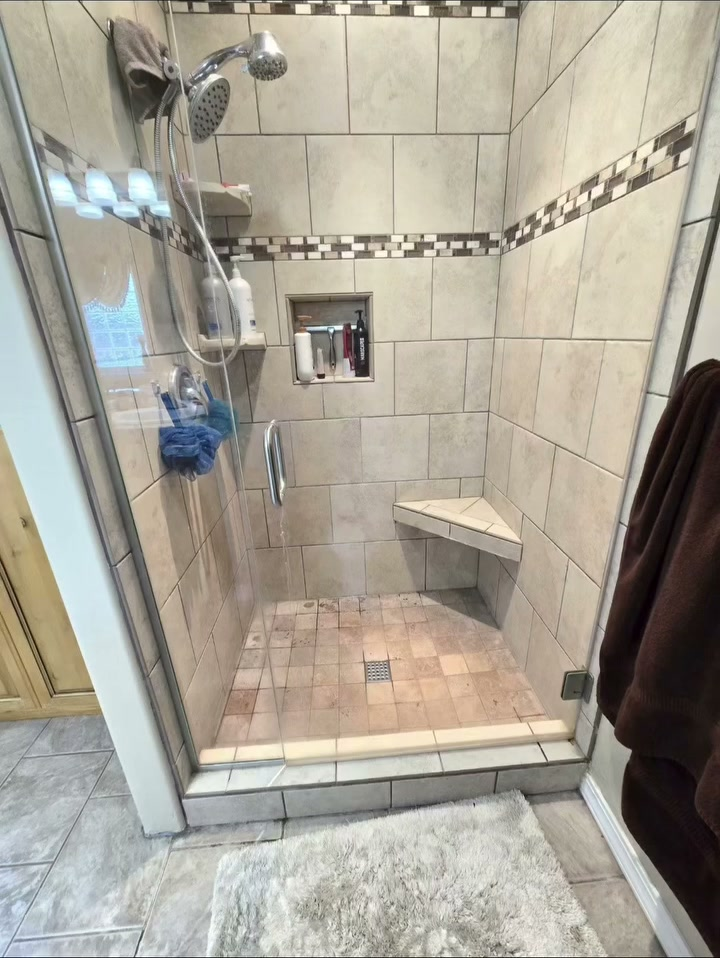
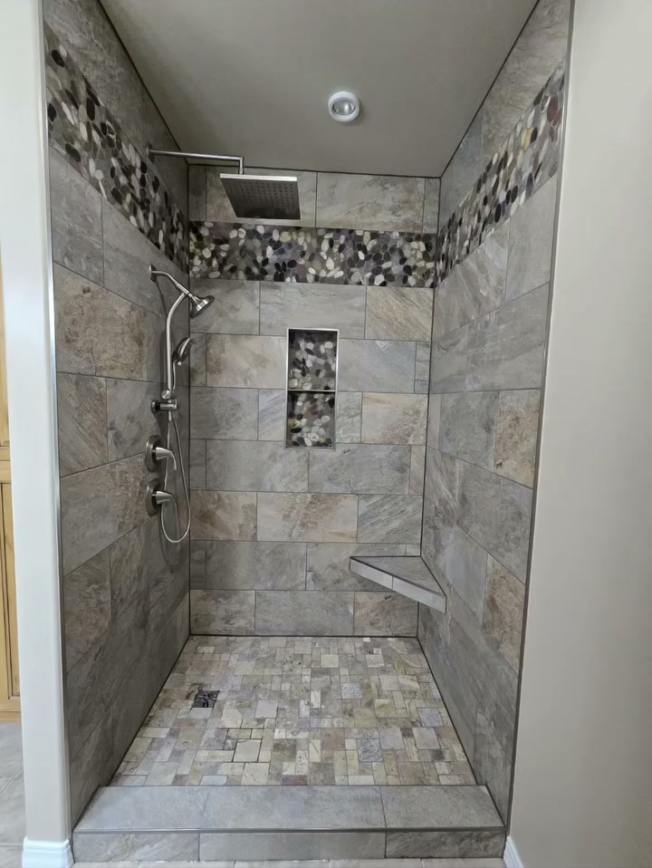

Walk-in and accessible showers in Twin Falls
Bigger showers, real tile, and the details people notice: niches, benches, accent bands, grab bars and clean grout lines.



Tile that fits the house
Recent showers include marble-look porcelain with a patterned niche, charcoal large-format tile, and stone-look tile with a river-pebble band. The tile is chosen with you, and the layout is planned so cuts land where they look right.
Niches, benches and accent strips are built in during the tile work, so they're part of the wall and not an add-on.
Accessible showers
Tito has built roll-in showers with grab bars for customers who use a wheelchair, like the one pictured above.
Old showers come out to the studs, so problems behind the walls get found and fixed before any new tile goes up. Glass is the last step: frameless panels, framed sliding doors, or an open walk-in.
“Tito did a remodel on our bathroom which included a walk-in shower and a linen closet. His workmanship is above and beyond excellent!”

Before
AfterEnlarged walk-in shower
Torn out to the studs, made bigger, then tiled with large-format stone-look tile, a river-pebble band, a niche and a corner bench.
Common questions
Can you make my existing shower bigger?
Often, yes. The pebble-band shower on this page was enlarged as part of its remodel. It depends on the walls and plumbing, which Tito checks on the first visit.
Can a tub be turned into a walk-in shower?
Yes. Tub-to-shower conversions are a common request. Call or send the form and he'll look at the space.
Do you build accessible showers?
Yes. Roll-in showers with grab bars are part of the work, as shown on this page.